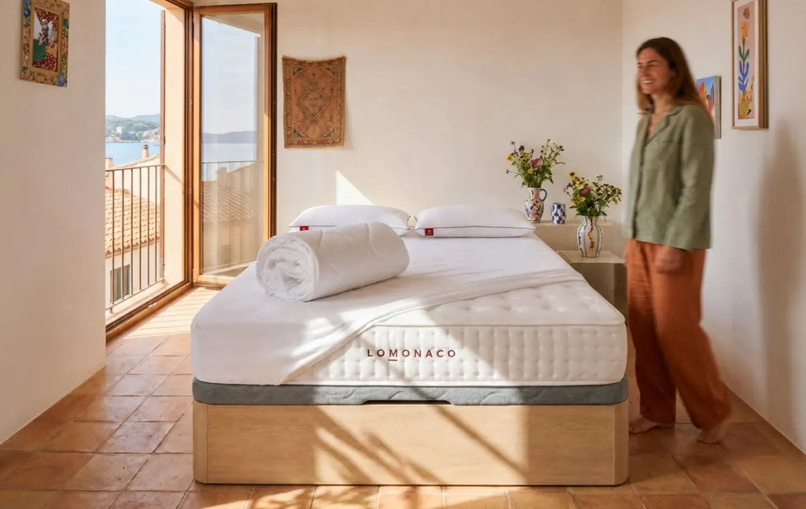
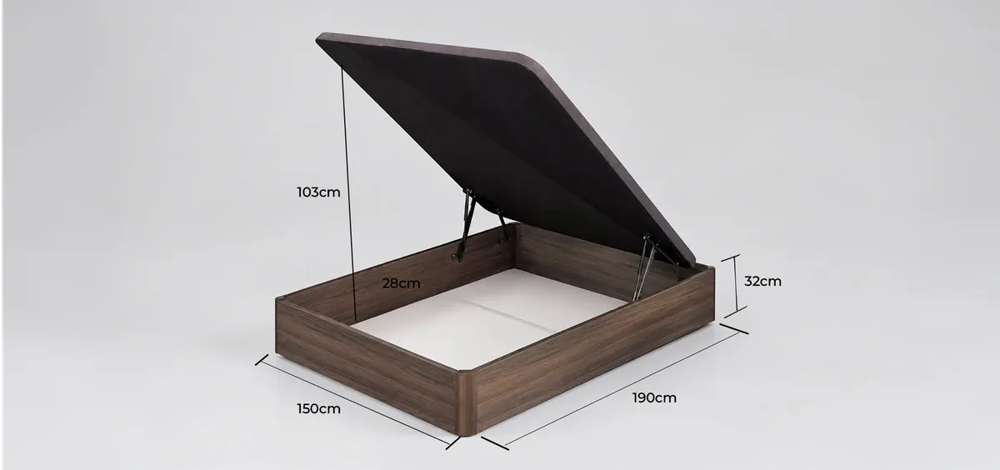
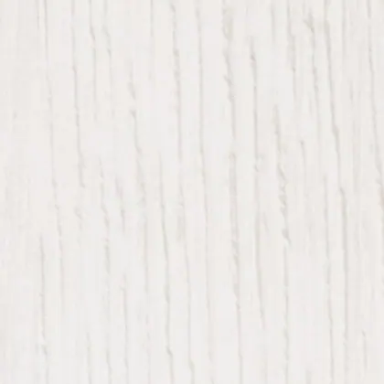
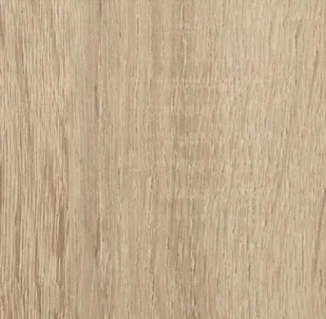
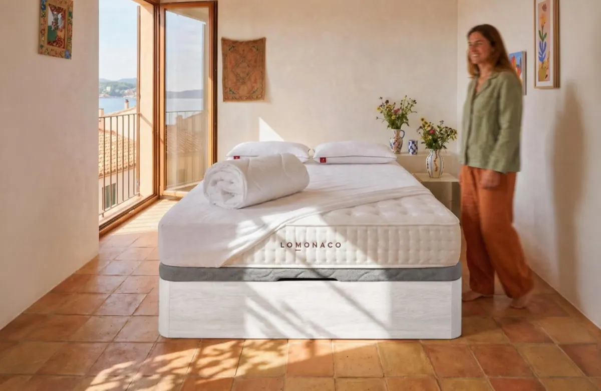

Canapé abatible: guía para elegir el tuyo

Un canapé abatible es una cama y un armario a la vez, y por eso conviene elegirlo con cuidado: si se queda corto de fondo, si la tapa cuesta de levantar o si no cabe por la puerta, lo vas a notar cada día. En esta guía repasamos todo lo que hay que mirar antes de comprarlo, con las medidas reales de nuestro canapé.
Respuesta rápida
Para acertar con un canapé abatible, fíjate en seis cosas:
- Estructura: madera robusta, que no se combe con el peso del colchón.
- Capacidad: el fondo interior del arcón; a partir de 25–28 cm caben mantas, edredones y maletas.
- Altura: sumada al colchón, la cama debería quedar a la altura de la rodilla, entre 55 y 65 cm.
- Apertura: un sistema con frenos que suba y baje la tapa sin esfuerzo y sin golpes.
- Tapa: firme y antideslizante, para que el colchón no se mueva al abrir.
- Medida: la misma que tu colchón, comprobando que la tapa abierta no choca con nada.
¿Qué es un canapé abatible y para quién es?
Es una base para el colchón con forma de caja: la tapa sobre la que descansa el colchón se levanta y deja a la vista un arcón que ocupa todo el hueco de la cama. Es para quien necesita almacenaje extra y quiere un apoyo firme y plano para su colchón.
El canapé abatible resuelve dos cosas a la vez. Por un lado, da al colchón una superficie rígida y uniforme, la que mejor funciona con colchones viscoelásticos, de látex y de muelles ensacados. Por otro, convierte el espacio bajo la cama, que normalmente se llena de polvo, en un armario cerrado.
Por eso es la opción más habitual en pisos con poco espacio de armario, en habitaciones juveniles y en dormitorios de invitados. Si dudas entre canapé y otras bases, en nuestra comparativa de canapé, somier o base tapizada tienes las diferencias en almacenaje, ventilación y precio.
¿Canapé de madera o tapizado?
El de madera es más resistente a golpes y roces, se limpia con un paño y mantiene su aspecto durante años. El tapizado, en tela o polipiel, es más decorativo pero se mancha y se desgasta antes en las esquinas. Para un uso diario, la madera es la opción más práctica.
| Característica | Canapé de madera | Canapé tapizado |
|---|---|---|
| Resistencia a golpes | Alta | Media |
| Limpieza | Un paño húmedo | Se mancha más |
| Desgaste en esquinas | Mínimo | Visible con el tiempo |
| Estética | Natural, combina | Más decorativa |
Valoración orientativa de nuestros asesores. En LOMONACO fabricamos el canapé abatible en madera.
¿Cuánto cabe en un canapé abatible?
Depende del fondo interior del arcón y de la medida. Nuestro canapé tiene 28 cm de fondo: en un canapé de 150×190 eso supone unos 800 litros de espacio, suficiente para la ropa de cama de invierno, edredones, almohadas de repuesto y una o dos maletas.
- 28 cmde fondo interior en el arcón del canapé LOMONACO
- 32 cmde altura total del canapé, sin colchón
- 103 cmde altura con la tapa abierta

| Medida del canapé | Capacidad aproximada | Qué cabe, por ejemplo |
|---|---|---|
| 90×190 · 90×200 | 480 – 500 litros | Ropa de cama de invierno y un edredón de repuesto |
| 105×190 · 105×200 | 560 – 590 litros | Lo anterior y una maleta mediana |
| 135×180 · 135×190 | 680 – 720 litros | Ropa de cama de toda la casa y una maleta grande |
| 150×190 · 150×200 | 800 – 840 litros | Mantas, edredones, almohadas y dos maletas |
| 160×200 | unos 900 litros | El equivalente a un pequeño armario |
| 180×200 · 200×200 | 1.000 – 1.120 litros | Repartidos en dos arcones, uno por pieza |
Cálculo con la medida exterior y los 28 cm de fondo del canapé LOMONACO. El volumen útil es algo menor por el grosor de los laterales.
Consejo del Asesor del Descanso. Guarda lo que usas por temporadas: ropa de cama de invierno, edredones y maletas. Lo que necesitas a diario es más cómodo en un armario o una cómoda, para no tener que levantar la tapa cada día.
¿Qué altura debe tener un canapé abatible?
Lo importante es la altura total de la cama, sumando canapé y colchón. Lo más cómodo es que quede a la altura de la rodilla, entre 55 y 65 cm, para sentarte y levantarte sin esfuerzo. Con nuestro canapé de 32 cm y un colchón de 25 a 30 cm, la cama queda entre 57 y 62 cm.
Si la cama queda demasiado baja, cuesta más levantarse, algo que notan especialmente las personas mayores o con molestias de rodilla o espalda. Si queda demasiado alta, sentarse en el borde resulta incómodo y los pies no llegan bien al suelo. Ten en cuenta también la altura del cabecero y de las mesillas, para que el conjunto quede proporcionado.
¿Cómo debe abrir y cerrar un canapé abatible?
Debe subir con poco esfuerzo, quedarse abierto sin sujetarlo y bajar despacio, sin golpes. Eso depende del sistema de apertura: unos pistones o frenos bien ajustados al peso de la tapa y del colchón. El nuestro lleva frenos de seguridad pensados para el uso diario.
El sistema de apertura es la pieza que más se usa del canapé, así que conviene fijarse en él:
- Si la tapa cuesta mucho de levantarEl sistema se queda corto para el peso del colchón. Pasa sobre todo con colchones muy pesados, como algunos de látex de gran altura.
- Si la tapa sube sola o no se queda abajoEl sistema es demasiado fuerte para un colchón ligero. Se nota al poner un colchón nuevo más ligero que el anterior.
- Si la tapa baja de golpeLos frenos han perdido fuerza con los años. Se pueden revisar o cambiar sin cambiar el canapé entero.
Al abrir el canapé, la tapa llega a unos 103 cm de altura. Comprueba que no choca con baldas, cuadros, una ventana baja o el cabecero.
¿Qué medida de canapé elegir?
La misma que tu colchón: un colchón de 150×190 necesita un canapé de 150×190. Fabricamos el canapé abatible en 11 medidas, de 90×190 a 200×200. Las de 180×200 y 200×200 se sirven en dos piezas, de 90 y 100 cm de ancho, para que entren con facilidad por puertas y escaleras.
Elige tu canapé por medida
Canapé 90×190 Canapé 90×200 Canapé 105×190 Canapé 105×200 Canapé 135×180 Canapé 135×190 Canapé 150×190 Canapé 150×200 Canapé 160×200 Canapé 180×200 Canapé 200×200
Las medidas más buscadas son las de matrimonio, 135×190 y 150×190. Si vas a cambiar también de colchón, aprovecha para pensar si te conviene subir de medida: para dos adultos recomendamos un mínimo de 150 cm de ancho.
Acabados del canapé abatible LOMONACO
Nuestro canapé abatible de madera está disponible en cuatro acabados: blanco, nórdico, nogal y roble. Todos tienen la misma estructura, el mismo fondo de 28 cm y la misma tapa antideslizante; solo cambia el color, para que combine con el resto de muebles del dormitorio.
Blanco
- Blanco liso y luminoso
- Ideal para dormitorios pequeños

Nórdico
- Madera blanqueada con la veta a la vista
- Combina con estilo escandinavo
Nogal
- Madera oscura y cálida
- Combina con muebles clásicos

Roble
- Madera natural de tono claro
- Cálido y versátil
¿Dudas con la medida o el acabado? Te ayudamos a elegir
Cuéntale a un Asesor del Descanso el tamaño de tu dormitorio y el colchón que tienes o quieres comprar, y te dirá qué canapé encaja. Te lo llevamos y te lo montamos gratis.
Hablar con un asesorVer canapé abatible de maderaCinco comprobaciones antes de comprar un canapé abatible
Mide el hueco de la cama y el paso a los lados, comprueba que la tapa abierta no choca con nada, revisa el acceso a la vivienda, ten en cuenta el peso de tu colchón y decide qué vas a hacer con la base antigua. Con eso evitas casi todos los problemas.
- Mide el hueco y el pasoDeja al menos 60 cm libres a cada lado de la cama para moverte y para acceder al canapé abierto.
- Comprueba la altura de aperturaLa tapa abierta llega a unos 103 cm. Mira que no haya baldas, cuadros o una ventana justo encima.
- Revisa el acceso a casaMide puertas, pasillos y el ascensor. En 180×200 y 200×200 el canapé llega en dos piezas, lo que facilita mucho la entrega.
- Ten en cuenta tu colchónUn colchón muy pesado o muy ligero cambia el esfuerzo al abrir. Si vas a estrenar colchón, piensa en el canapé y el colchón juntos.
- Decide qué hacer con la base viejaSi no tienes dónde llevarla, ofrecemos un servicio de recogida de tu base o canapé antiguo.

Canapé abatible de madera
- 28 cm de fondo y 32 cm de alto
- Frenos de seguridad y tapa antideslizante
- 11 medidas, 4 acabados y montaje gratis

Colchón + canapé
- El equipo completo a juego
- Sale más a cuenta que por separado
- Con almohadas y ropa de cama según el pack
Nuestra recomendación
Elige un canapé abatible de madera, con un fondo de al menos 25–28 cm, una apertura con frenos que suba y baje sin esfuerzo y una tapa antideslizante, en la misma medida que tu colchón. Si vas a renovar también el colchón, compra los dos a la vez: el canapé y el colchón trabajan juntos, y en pack te sale más a cuenta (te lo explicamos en nuestra guía para combinar colchón y canapé). Puedes ver todos nuestros colchones para elegir el que mejor encaja contigo.
Preguntas frecuentes sobre el canapé abatible
¿Qué altura tiene un canapé abatible?
Depende del modelo. El canapé abatible de madera de LOMONACO mide 32 cm de alto, con 28 cm de fondo interior. Con un colchón de 25 a 30 cm, la cama queda entre 57 y 62 cm, a la altura de la rodilla, que es lo más cómodo para sentarse y levantarse.
¿Cuánto cabe en un canapé abatible?
Con 28 cm de fondo, un canapé de 135×190 tiene unos 700 litros de capacidad y uno de 150×190, unos 800 litros. Caben con holgura la ropa de cama de invierno, edredones, almohadas de repuesto y una o dos maletas.
¿Qué es mejor, un canapé de madera o tapizado?
Para un uso diario, el de madera: resiste mejor golpes y roces, se limpia con un paño y no se desgasta en las esquinas. El tapizado es más decorativo, pero se mancha y envejece antes.
¿Se puede poner cualquier colchón en un canapé abatible?
Sí. El canapé da un apoyo firme y plano que funciona con colchones viscoelásticos, de látex y de muelles ensacados. Lo único que hay que tener en cuenta es el peso del colchón, porque influye en el esfuerzo necesario para abrir la tapa.
¿El canapé abatible viene montado?
En LOMONACO te lo llevamos y te lo montamos gratis. Las medidas de 180×200 y 200×200 se sirven en dos piezas para que entren con facilidad por puertas, escaleras y ascensores.
Completa tu cama
Almohada viscoelástica Protector de colchón impermeable Edredón nórdico
Fuentes
- Ficha técnica del canapé abatible de madera de LOMONACO: medidas, fondo del arcón, altura, acabados y sistema de apertura (consultada el 22 de octubre de 2026).
- Experiencia del equipo de Asesores del Descanso de LOMONACO con las consultas sobre canapés.